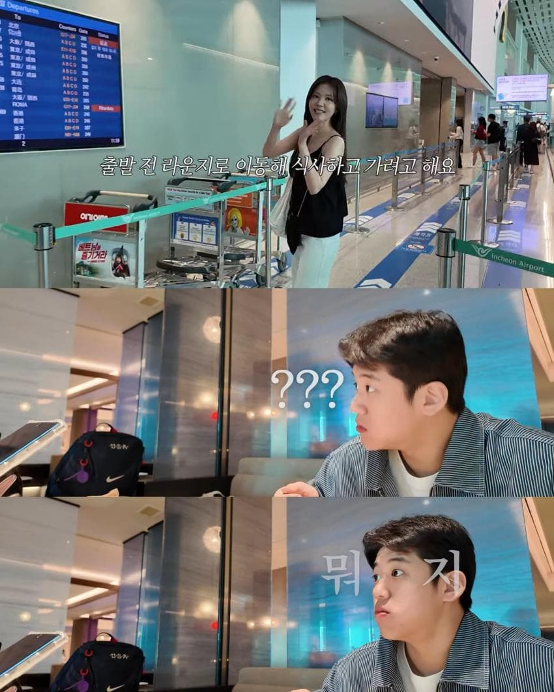
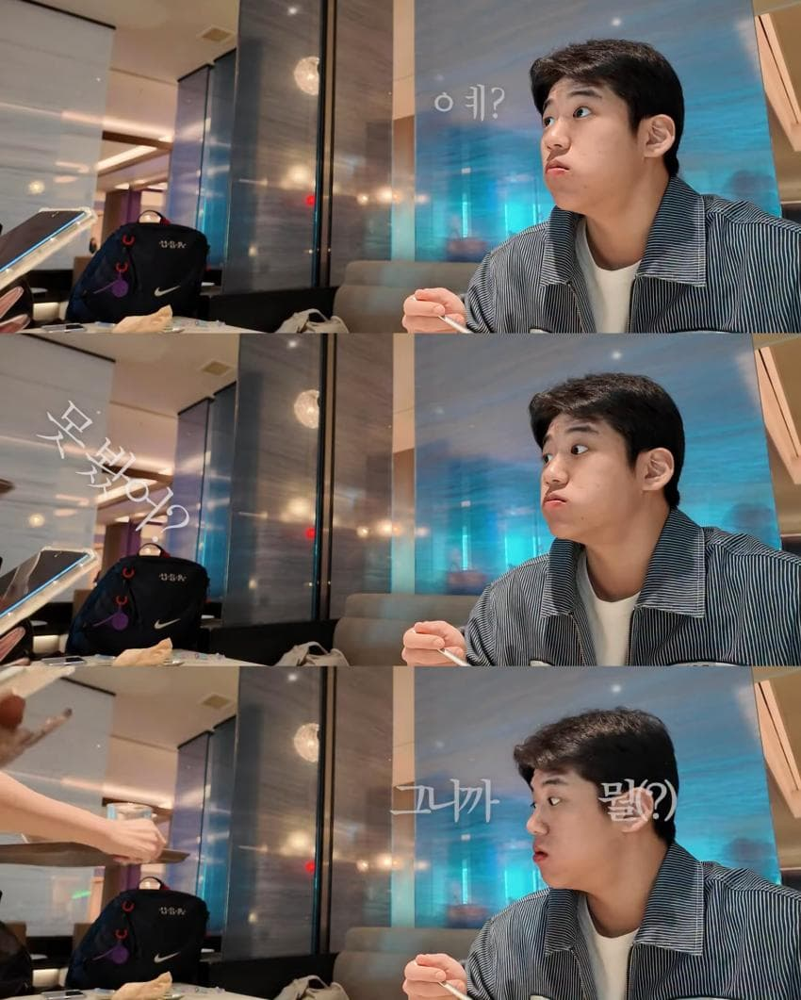
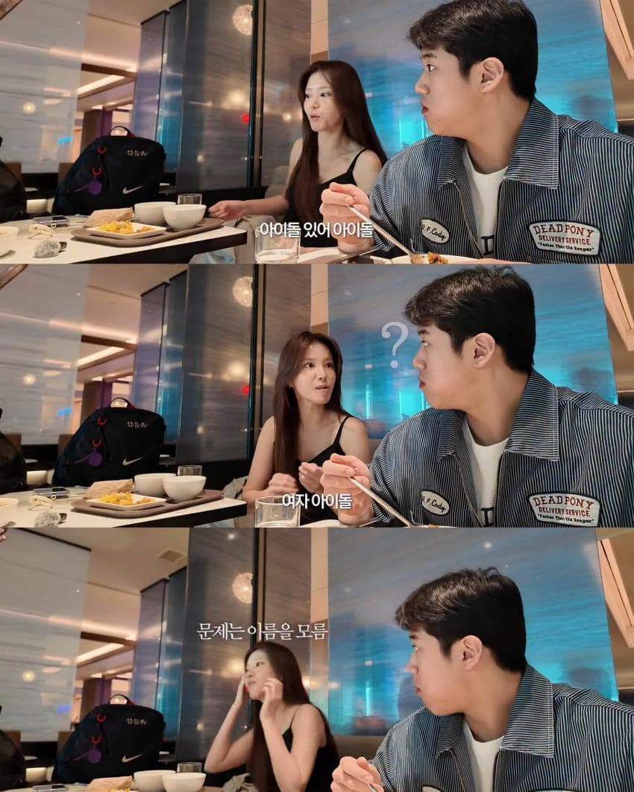
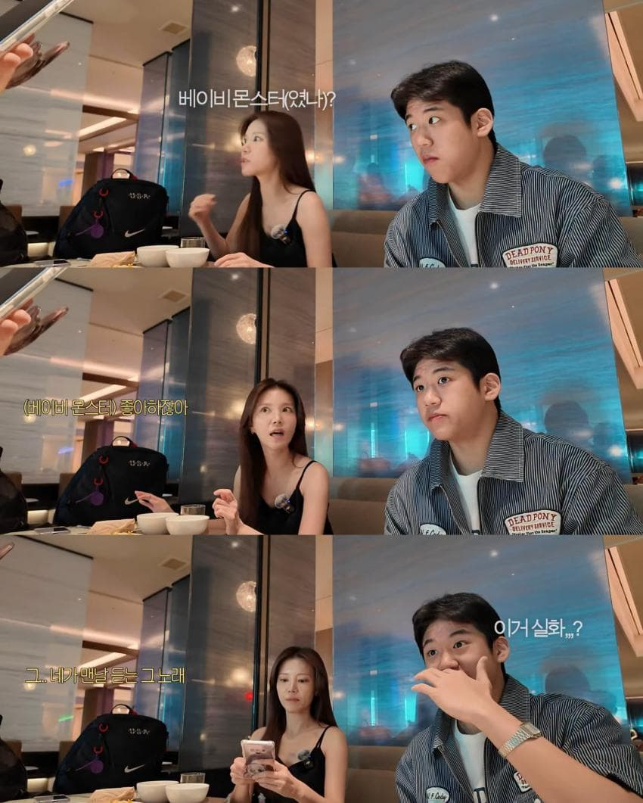
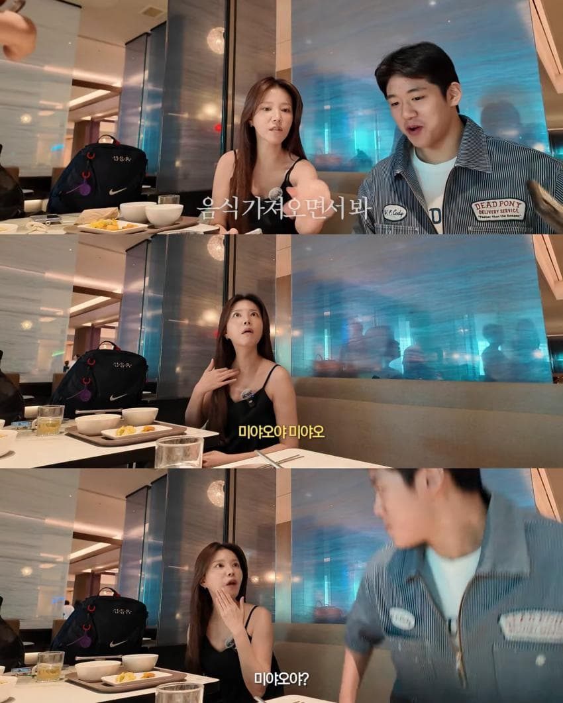
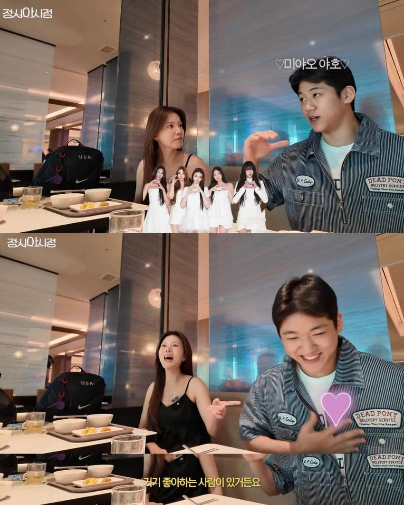
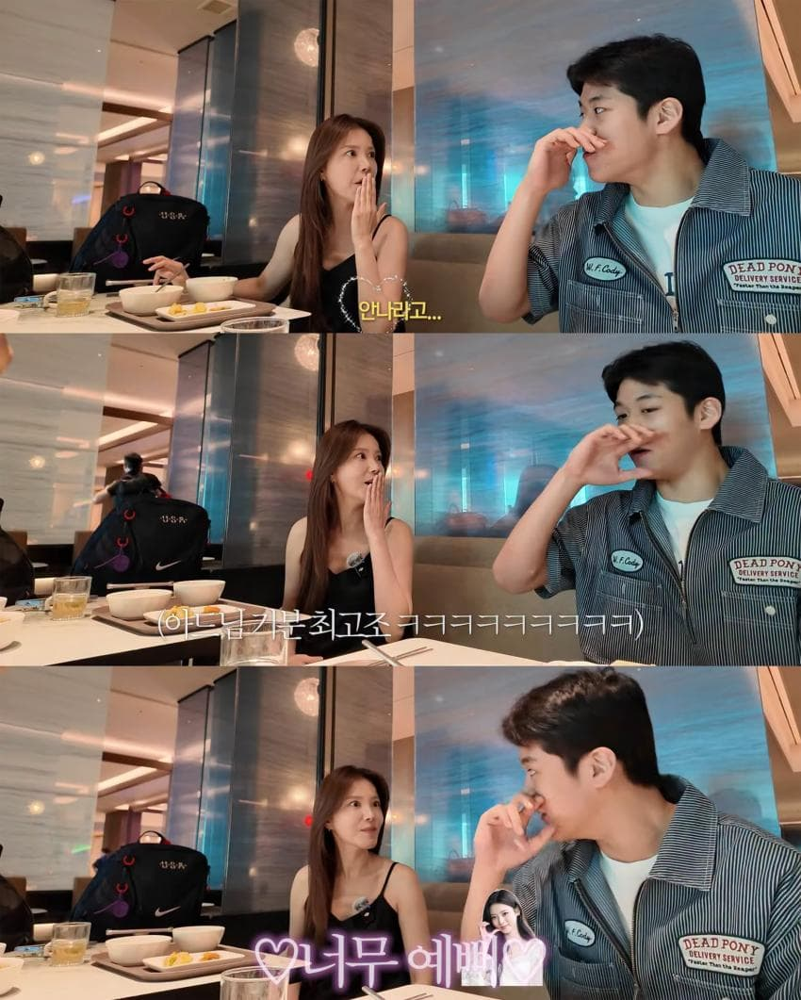
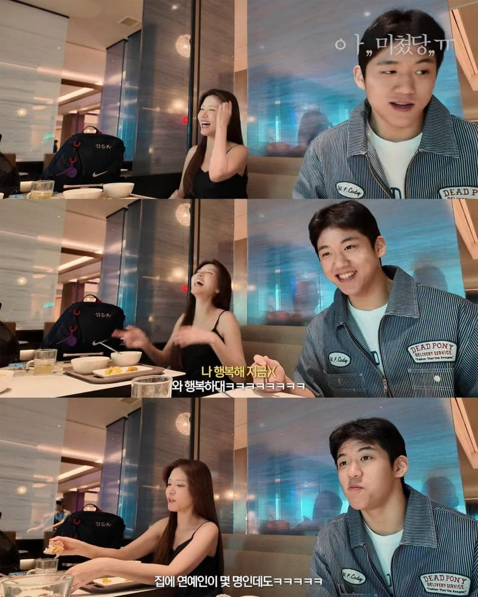

나도 자가 갖고싶다
남편도 미남. 친할아버지한테는 개겼다간 피똥싼다
지금도 이쁘시네
정시아인가?
사람은 익숙한것에 호감을 느끼는지라 보통은 가족과 닮은 느낌 안에서 이상형이 있음
예쁘시긴 한데
비슷...한가?
스타일링 비슷하게 하면 느낌 확 살듯
개오바야 했는데 뭔지 알겠네 ㅋㅋㅋㅋㅋ
그냥 예쁜 여자 좋아하는 걸로
내말이 ㅋㅋ
ㅘ 아들이 09년생이네 세상에ㅋㅋㅋㅋㅋㅋㅋㅋㅋㅋㅋㅋㅋㅋㅋㅋㅋ
어라..
둘다 예쁘다는 공통점 말곤..
상이 아예 다른데?
정시아도 예쁘지만 저 둘은 전혀 다른데
화장법이 달라서 그런가? 잘 모르겟는데...
모 자가 미남 미녀구만